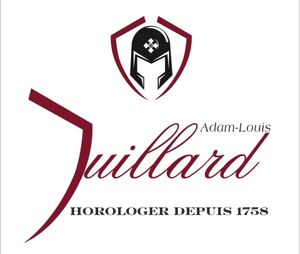

Trade Mark Journal No.2026/011 13 March 2026
WO0000001904594 (14)
Office of origin: Italy
Date of International Registration:8 October 2025
Date of designation in the UK:
8 October 2025

IN THE CENTER THE WRITING: ADAM-LOUIS JUILLARD, AT THE BOTTOM THE WRITING: HOROLOGER DEPUIS 1758, AT THE TOP THE LOGO: THE SHIELD ENCLOSES INSIDE THE HELMET WITH A HERALDIC CROSS.
International priority date claimed: 18 September 2025
(Italy)
(302025000143371)
- Class 14
- Agates; raw or semi-worked black amber; amulets [jewelry]; anchors [watches]; rings [jewelry]; key rings of precious metals; spun silver; silver, unworked or beaten; jewelry for shoes; jewelry for headgear; barrels [watches]; balance wheels [watches]; bracelets [jewelry]; embroidered fabric bracelets [jewelry]; watch bracelets [straps]; busts of precious metal; cabochons; watch cases [boxes]; watch cases; chains [jewelry]; watch chains; clasps for jewelry; charms for jewelry; charms for key chains; charms for key rings; necklaces [jewelry]; commemorative cups in the form of statues of precious metals; prize cups of precious metals; key lanyards; crucifixes being jewelry; crucifixes of precious metals, other than jewelry; chronographs [watches]; stopwatches; stopwatches; chronoscopes; diamonds; precious metal clothing labels; tie pins; gold thread [jewelry]; precious metal thread [jewelry]; silver thread [jewelry]; precious metal thread [jewelry]; jewelry hooks; cufflinks; copper tokens; jewelry; ivory jewelry; cloisonné jewelry; yellow amber jewelry; pet jewelry; precious metal insignia; iridium; pendulum, wall, table, wall, or floor clock hands; wristwatch hands; precious metal alloys; precious metal ingots; clockwork; medallions [jewelry]; unworked or semi-worked precious metals; misbahas [prayer beads]; watch springs; coins; precious metal art objects; olivine [precious stone]; earrings; black amber ornaments; raw or beaten gold; pendulum clocks; atomic clocks; wristwatches; timepieces [grandmother clocks]; electric clocks; watches; osmium; palladium; pearls [jewelry]; embroidery beads for making jewelry; beads for making costume jewelry; semi-precious stones; precious stones; platinum [metal]; key rings [key rings with trinkets or charms]; key rings [key chains with trinkets or charms]; retractable key rings; jewelry boxes; roll-up jewelry cases; dials [watches]; sundials; rhodium; rosaries; gears [watches]; ruthenium; jewelry presentation boxes; boxes of precious metal; jewelry boxes; jewelry caskets; jewelry boxes; watch cases; brooches [jewelry]; tie pins; pins for ornament; pins [jewellery]; jewel pins for hats; spinels [precious stones]; statues in precious metals; statuettes made of precious metals; rhinestones; alarm clocks; watch glasses.
Mr. De Marzo Maurizio
Representative: GIOVANNI BRUNI, C/O Laforgia, Bruni & Partners S.r.l.,, C.so DUCA DEGLI ABRUZZI n. 2, I-10128 TORINO, ITALY